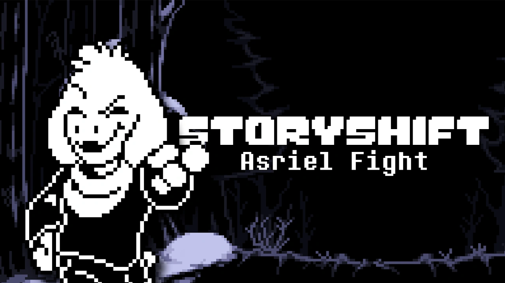
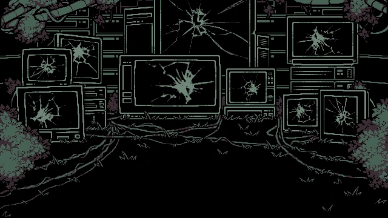
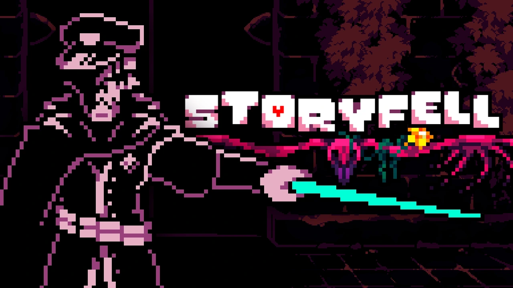
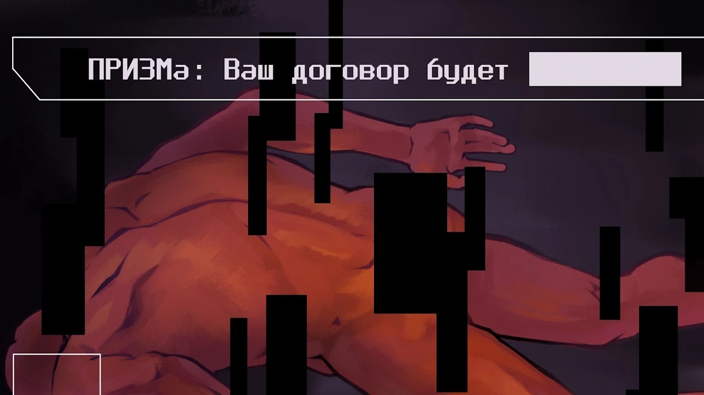
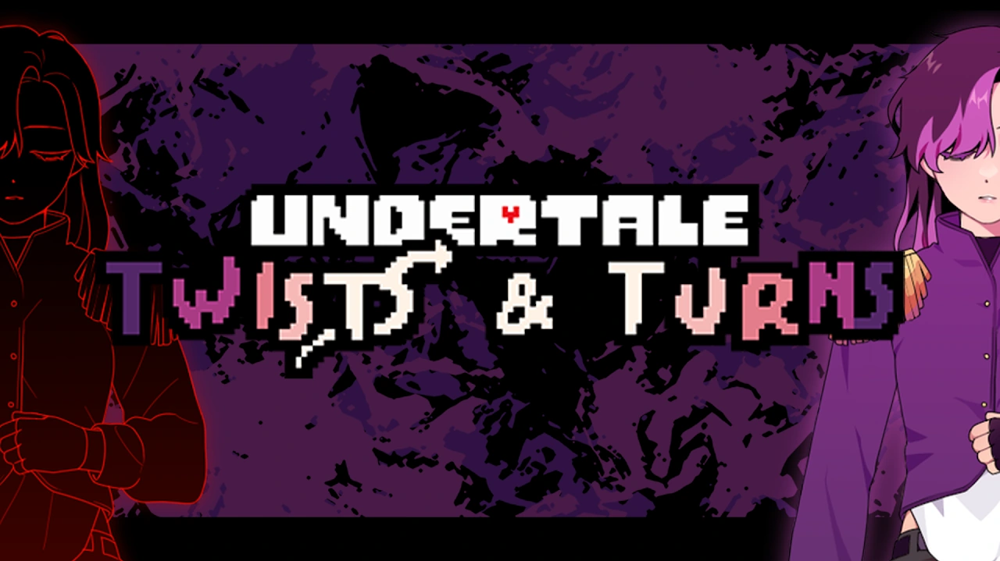

UT: Facing Demons
1–1.5 hours
Face off against Chara Dreemurr during the genocide route in the StoryShift AU, complete with original twists by our team.
- Full Russian voice acting.
- Five unique endings.
- Three gameplay phases.
- New Game+.
- Achievements.
IGB Team / Projects
1–1.5 hours
Face off against Chara Dreemurr during the genocide route in the StoryShift AU, complete with original twists by our team.

30–40 minutes
At a friend’s country house, a second-year engineering student hears an urban legend about a girl murdered at an abandoned factory. On the way home from a party that night, his old Lada stalls on a forest road. While he waits for his friend to pick him up, he notices a light deep in the woods. A skeptic, he sets off to find it, hoping someone lives nearby.
No English translation
Download · AniVisual
30–40 minutes
Your journey through Snowdin has come to an end. One obstacle remains. That adorable fluffy monster won’t hurt you, but you must help it finish the game. Give it what it asks for!

30–40 minutes
The pages of a crumpled diary tell the story of a peasant’s son and his dear sister, who endured the horrors of war. For some, their tale is a lesson. For others, it is a reminder of the cruelty of fate. Let us begin with the first page…
Award. 22nd place at Anivisual Jam 4 (2022)
No English translation
Download · AniVisual
20–30 minutes
Fight the battle against Omega Flowey from Flowey’s own perspective. The awakened Souls of the fallen children will deliver their verdict upon this lost lamb.
Award. 3rd place at Gamejam for Underparty (Moscow, 2024)
Remake in development · No English translation
Download · itch.io
30–40 minutes
Long ago, monsters lost the war and retreated into the caves of Mt. Ebott. Now another soul has fallen into their domain. They will face enemies, meet friends and fight for their freedom, or show how mercy changes the world. That was the plan. Always was. Now you stand before Generalissimo Papyrus, at the beginning of a story whose ending even I do not know.
To be continued
Download · Game Jolt
40–60 minutes
Welcome aboard the ███ ship Zrimiy (The Visible). Your identification number is ███. Status confirmed. Before the tour, calibrate your PRISM device for navigation. While it is active, your senses may be restricted to prevent ███, as stipulated in your contract. In the event of a breach, your contract will be ███. We look forward to ███ cooperation, Senior ███ Officer Nikolaev!
Award. 17th place at Kapella Jam 3 (2026)
Remake in development · No English translation
Download · VK
30–40 minutes
Play as Mattew, a human who has fallen into an Underground filled with monsters. Find a way out and remember how you got there. Why does it feel like you were never supposed to be the hero of this story?
To be continued
Download · Game Jolt
Playtime to be announced
After failing to pull your favorite heroine in a gacha game, you curse God in frustration. To teach you a lesson, God gives you a magical die and sends you to a world bound by a divine Scenario. Will you learn your lesson, or perish in a world where luck does not exist?
In development